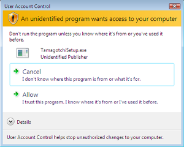

Find your question using the headings menu on the left. After you read this page and still can't find an answer to your question, please email Technical Support at pcpacksupport@bandai.com. The normal response time is 24-48 business hours.
Installation
What requirements must my computer meet to be able to run Tamagotchi PC Pack?
Your computer must at least run Windows XP. It also requires at least a 1.8Ghz processor with at least 512 MB of RAM.
When I try to install the Tamagotchi PC Pack, I get the following screen that says I'm trying to install an unidentified program. What should I do?

This issue shows up on Windows Vista® systems. One of the new security features of Windows Vista® is to warn you when you try to install a program that Microsoft has not reviewed. The Tamagotchi PC Pack is a safe program for you to install. If you want to install it, you must click Allow.
How do I uninstall the Tamagotchi PC Pack?
From the Control Panel choose Add/Remove Programs, in this list you will see Tamagotchi. Click the Remove button to remove the application from your computer.
Performance
The program froze, and I can't close it down. What should I do?
If the Tamagotchi PC Pack freezes on your computer and you can't close it using the X button, follow these steps:
- Press the Control, Alt, and Delete keys on your keyboard simultaneously to bring up the Login screen.
- Click Task Manager to bring up the Task Manager window.
- Click the Processes tab.
- Click the process called Tamagotchi.exe and then click End Process.
- Click Yes. The Tamagotchi PC Pack should exit.
The game is running really slowly or choppy. What can I do to fix it?
You can adjust the quality of the graphics to a lower setting. In the Settings menu, choose a lower quality in the Program Quality. You will notice that the quality of the graphics will become lower, but the games will play much faster.
The buttons stop working in the program; is this normal?
If your computer is busy displaying video or animations the buttons may not behave properly. Leave your mouse over the buttons and click once or twice slowly. Clicking repeatedly will not help.
Privacy
Is my user name information private?
Yes, your user name information is private to your computer.
In the Settings menu, what is the Dynamic Content Updater?
The Dynamic Content Updater (DCU) is program that will update content in the Tamagotchi PC Pack. If you check "Yes", the DCU will check a server periodically and deliver new content to you automatically as it becomes available.
What do I do if I forget my password?
Unfortunately, there is no way to recover a lost password. You will need to create a new user with a password you can remember. Your progress in the games will be lost, but your high scores will still be saved.
What do you do with the ZIP code I enter when I create a user name?
We just use the ZIP code to get an idea of where in the world our games are popular. We don't use it for any other purpose.
Voice Interaction
Do I have to have a microphone to use the Tamagotchi PC Pack?
You are not required to have a microphone, but without one, you will not be able to get your Tamagotchis to perform any buddy commands or trained programs. You will still be able to play all of the games and fun stuff using the keyboard. Just read the instructions for each game to find out what the keyboard commands are.
What are buddy commands?
Buddy commands are commands you can tell your Tamagotchi to do in the Main Menu. Just say the command and the Tamagotchi will perform the command for you. Every Tamagotchi comes with four commands it can perform. To find out what they are, click the microphone in the lower right corner from the Main Menu. The buddy commands are listed there.
What are trained programs?
Trained programs are commands you train your Tamagotchi on to open a program. For example, you could train your Tamagotchi to open your email program when you say "Email". To train programs, click the microphone in the lower right corner from the Main Menu.
How many trained programs can I have?
You can train your Desktop Buddy to recognize up to 256 commands.
I told my Tamagotchi a buddy command or trained program command, but it didn't respond. I don't think the voice interaction works?
Make sure that the room you're using the Tamagotchi PC Pack in is free of background noise because noise will interfere with the voice recognition process. Also make sure that your microphone is plugged in and working.
My buddy is performing commands, but I'm not saying anything!
You might have your microphone volume turned up too high. In the Settings menu, lower the microphone volume a bit. Another option is to redo the voice training (also in the Settings menu).
General
How do I get back to the main menu?
Just click the Home button at the top of the screen. The Home button is available in every section of the program.
How can I turn the sounds down on the game?
There is a volume control in the lower left corner of the program. This control is available in every section of the game. When you adjust this volume control, it only adjusts the volume for the program. Any other programs you have running that have sound won't be affected.
Games
When I get to the Food Court Frenzy, my computer slows down a lot? What can I do to make the game play faster?
Make sure that your video processor (your computer processor or RAM won't make much of a difference here) meets the minimum requirements. If not, there isn't much you can do.
You can also close any other programs that you have running while you are playing the game. Doing so will free up resources. A follow-up option would be to close the program and start it again to see if the performance improves.
Fun Stuff
Can I save my work in the coloring book?
No, you can't save your coloring book work. You should finish your work and print it. If you leave, your work will be lost.
In the Printing Goodies, how can I set up the page to print in landscape instead of portrait?
The only option for the printing goodies is portrait printing.